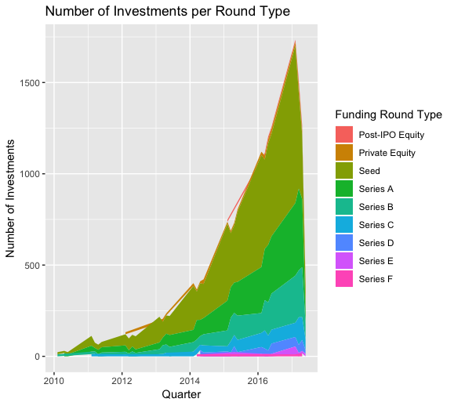

Crunchbase Founder Analysis
Technologies:
- R (
ggplot2andtidyverse) for data processing and visualization - Python (
sklearn) for logistic regression, SVC/SVM, random forest and K-fold cross validation
Project Objective
Through this project, I aim to help venture capitalists improve accuracy of their investments by understanding whether a start up will be successful through machine learning. A “successful” start-up is defined as one that would raise series B funding at the minimum.
Data
For this project, I scraped Crunchbase and gathered data from LinkedIn for 40,000 founders and start-ups records from 1968 to 2019.
These are a few notable observations from the data:
- The total investments from Series B and above take less than 40% of the total investments in the dataset.

- Most startup investments come from the US, specifically the states of California and New York.


- Unsurprisingly, the top 5 categories that receive the most startup investments are: (1) software, (2) mobile, (3) e-commerce, (4) enterprise software and (5) SaaS.

Methods and Findings
The K-fold cross validation result is as follows:
| Model Name | Accuracy | Recall | F-1 Score |
|---|---|---|---|
| Logistic Regression | 0.83 | 0.60 | 0.68 |
| XGBoost | 0.08 | 0.92 | 0.88 |
| Random Forest | 0.91 | 0.82 | 0.85 |
| Support Vector Classifier | 0.83 | 0.62 | 0.69 |

I chose random forest and XGBoost. Random forest has decent performance metrics, and provides feature importance. XGBoost, on the other hand, has both highest accuracy (92.42%) and F1-Score (87.26%).
The feature importances provided by random forest are as follows:

Insights
- Even though the number of founder with business degrees is higher, I was able to deduce that the correlation between a founder succeeding if he has a computer science background is higher with good confidence. This can be due to the growing digital/software/data related startups.
- There is a good chance of a founder succeeding if his alma mater is an Ivy-League/Top-School contrary to the popular belief of being a dropout. I hypothesize this can be true given the great alum network or maybe just the nature of the network a founder is exposed to in an Ivy league.
- Number of founded organisations is negatively correlated which can be attributed to distraction.
- More number of founders is negatively correlated to success. This is consistent with the idea: too many views (people) result into poor decisions.
- Startups with highest number of investments are focused at portfolio diversification as observed in our market basket analysis.
- Most of the largest VC firms finance late stage rounds and tech companies. So more and more tech startups are blooming and most new start-ups are in the tech category.
Next Steps
- Apply the selected model on new startup (from 2020 and 2021) and perform qualitative analyses to see if the findings are still relevant
- See how COVID-19 affects startup valuation and adjust models to avoid drift.
- Refactor the repo and provide unit tests